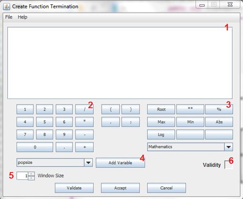

The termination function is used to calculate the termination condition for each generation, This function must return a boolean or GAL_Parser will throw an error.
Pressing on the "Define Termination Function" button (without the quotes) opens a window like this one:
Each number is defined as follows:
Code Area
Calculator
Complex Buttons
Add Variable
Window Size
Validate
The termination function can be left empty, this way is used the default termination "False;"